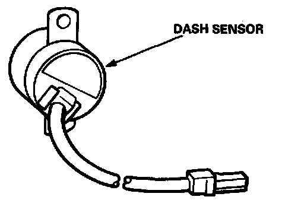
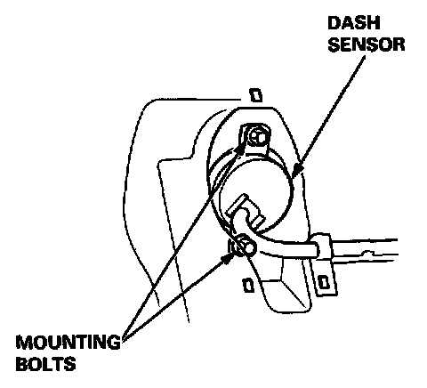

Impact Sensor: Testing and Inspection
SENSOR INSPECTION
CAUTION: Take extra care when painting or doing body work in the area below the dashboard. Avoid direct exposure of the sensors or wiring to heat guns, welding, or spraying equipment.
WARNING: DISCONNECT BOTH THE NEGATIVE AND POSITIVE BATTERY CABLES.
- Connect the short connector(s) before working below the dashboard or near the dash sensors.
- After any degree of frontal body damage, inspect both dash sensors. Replace a sensor if it is dented, cracked, or deformed.

- Be sure the sensors are installed securely.